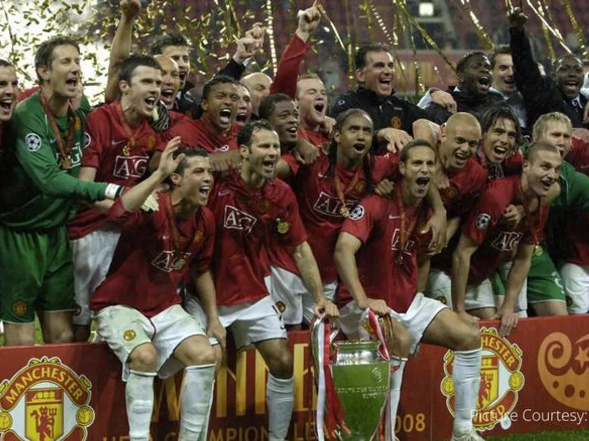
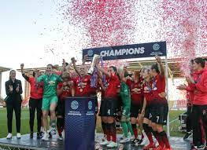
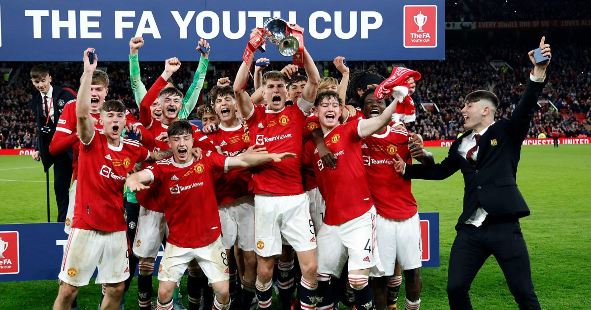

This picture was taken 2007–08 season and was Manchester United's 16th season in the Premier League, and their 33rd consecutive season in the top division of English football. Despite a slow start in the league, they won their 10th Premier League title (their 17th top division title overall, just one behind Liverpool's then record of 18) and beat Chelsea on penalties in the 2008 UEFA Champions League Final to claim the European Double.

Manchester United Women Football Club is a professional football club based in Leigh, Greater Manchester, England, that competes in the Women's Super League (WSL), the top tier of English women's football, after gaining promotion from the Championship at the end of the 2018–19 season.

s the most senior of Manchester United's youth teams and the club's former reserve team.
They play in the Premier League 2, the highest tier of the Professional Development League.